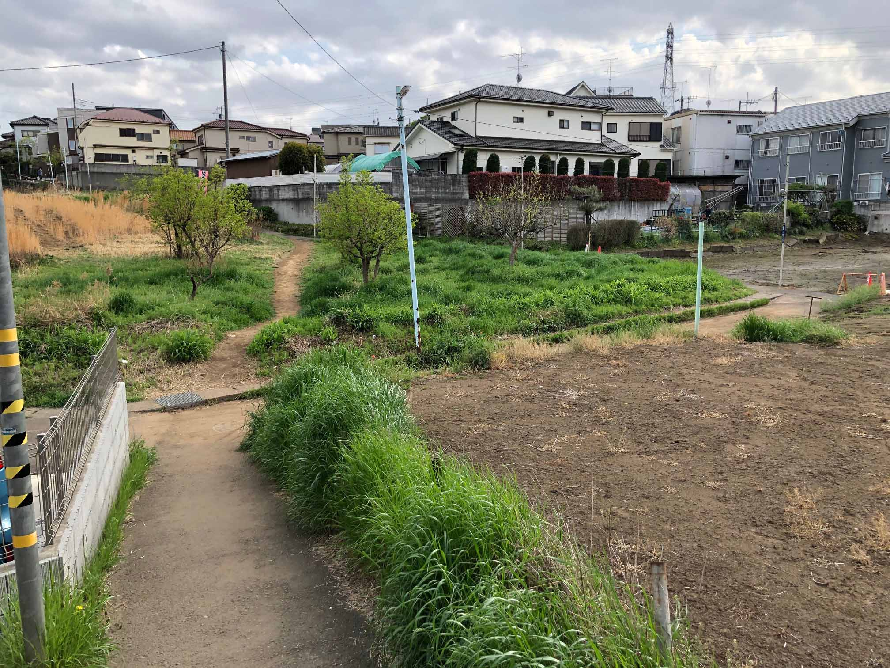

あなたがやるからこそ研究には意味がある
投稿｜2021年04月04日 更新｜
意味があるのか．独自性，新規性は担保できているのか．
周りからも面白いと思ってもらえるのか．
研究をしていると，時折このような不安に駆られることがあります．
ただ，その研究はあなたがやっているからこそ意味があるのです．
今回は，そう考えるに至った経緯と，それを踏まえたわたしの研究の心構えについてお話しします．
わたしが研究者を目指したきっかけは，広場や大学構内にある”けもの道”でした．
皆さんも日頃，緑地が禿げて道のようになっているところを見たことがあると思います．
舗装されていないところを，複数の人が同じように歩いてできるこの道の呼び方は様々ですが，
海外では，”Desire path”と呼ばれており（図1），一部の人の間ではSNSにスレッドが立つほどに
興味の対象であるようです（*1）．

図1．街中のDesire path
住宅地にぽっかりと空いた緑地に一筋，土が露出した部分があります．これがDesire pathです．
舗装された道もありますが，向こうに行くために人はわざわざ遠回りしない様子が見て取れます．
Desire pathは，その名の通り人の歩行ニーズを体現しています．なので，Desire pathができるような歩行路は， 人の歩行ニーズを捉えきれていないと言えます．逆を言えば，Desire pathの発生を再現することができれば， 人の歩行ニーズに即した歩行路を計画できることになります．設計課題で，人がどう歩くのかわからず， 広場にどう歩行路を設計したらいいのか途方に暮れた経験があり，Desire pathは強烈にわたしの目を惹きました．
Desire pathというありふれた現象に，歩行路計画の本質に迫る可能性を見たときの興奮は， これまでの人生でも異質なものだったと記憶しています．幸い，所属していた研究室の知見に， Desire pathを再現するモデルに使えそうなものがあり，わたしは水を得た魚のように研究に打ち込みました． この研究がわたしの初めての学術成果になり，ありがたいことに学会の年間優秀論文賞も授賞できました．
些細な現象に着眼できた感性と，数理的なモデルを自分で構築できたことに鼻高々だったわたしですが， 数々の研究に触れるにつれて，段々と自信を失っていた時期がありました．Desire pathに着目し， それを再現しようという研究者は過去にいます．また，平田森三という物理学者もキャンパスの窓から見えるDesire pathに対する考察を本の一節にまとめています（*2）． わたしが思う以上にDesire pathに着眼している人がたくさんいて，Desire pathに着目できたこと自体は， そこまで独自なものではなかったのではないかと不安に思うようになりました．そして，構築した数理モデルも， ベースになっているのはドロネー図という古典的なものであるし，その基礎研究や応用についても，高度なものが山ほどあります． つまり，着眼点にも手法にも，独自性や新規性は実はなかったのではないかと，後から感じるようになったのです．
ただ，あるときふと，この研究は「わたし」という人間だからできたことだと気づきました． 建築を学んでいて，歩行路の設計に悩んだことがあって，Desire pathに興味惹かれ， その再現が歩行路設計に活かせるのではと着想し，それを研究にしようと決意し， ドロネー図を手法として使っている研究室に所属しているという条件を満たす研究者にしかできない研究であり， それはわたしだったのです．
おそらく，あらゆる研究はそうなのだと思います．あなたがそれを研究にしようと決意した瞬間に， その研究はすでにあなたにしかできないものになっているはずです．なぜなら， あなたのバックグラウンドを持たないだれかがその研究に駆り立てられることはなく，そのバックグラウンドはあなた固有のものだからです． 同様にして，手法も考察も，あなた独自のものにならざるを得ません．その意味で，すべての研究は等しく独自性があると言えるかもしれません． 研究をレビューしていると，似た着想の持ち主に出会うこともしばしばです． それでも，自信をもって前に進むべきです．あなたの研究は必ずその研究者とは違ったものになります． また，ジャーナルに載るかどうかも大事ですが，載るようなジャーナルがなかったとしても， その研究はプレシャスである．そう思います．
研究は客観的であることが原則です．ただ，それと同時に，研究者のキャラクターを反映します． キャラクターがよく表れている研究は，読んでいて面白いです．そして，経験豊富な研究者ほど， 研究にその為人が現れているように感じます．研究からあふれ出るキャラクターの，その源泉はまだわかりませんが， 自分もいつかそのような研究ができることを目指しています．そして，そのためには自分で自分の研究を大切に， 面白いと思ってあげることが大切だと胸に刻んで研究に勤しみたいと思います．
*1．flickrのグループ https://www.flickr.com/groups/desire_paths
*2．『キリンのまだら』平田森三著．pp. 54-61．
この時代の物理学者のエピソードには，そそられるものがあり，それについていつかまとめたいと思っています．